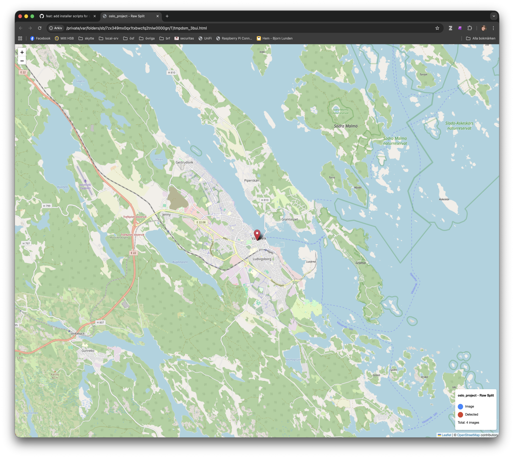

Map Viewer Feature¶
Overview¶
The Map Viewer provides an interactive map display for geotagged images by opening Leaflet.js maps in your default web browser.

Features¶
Map Display¶
- Opens interactive maps in your default web browser
- Full Leaflet.js functionality and performance
- Reliable loading of all map components
- Handles datasets of any size
Note: Maps always open in your default web browser for optimal performance and full Leaflet.js functionality. The browser displays an interactive Leaflet.js map with geotagged images shown as clickable markers on OpenStreetMap.
Interactive Maps¶
- Interactive Leaflet.js maps with full functionality (zoom, pan, markers, popups)
- OpenStreetMap tiles for base layer
- Color-coded markers for different image types
Technical Details¶
Dependencies¶
- Leaflet.js: JavaScript mapping library (loaded via CDN)
- OpenStreetMap: Map tile provider
- webbrowser: Python standard library module for opening URLs
Implementation¶
Maps are displayed in your default web browser for the best user experience.
Technical Implementation¶
- File:
gui/src/crackz_gui/components/map_viewer.py - Generates Leaflet.js HTML map with geotagged image markers
- Saves HTML to a temporary file
- Opens the map in your default web browser using
webbrowser.open() - Browser provides full JavaScript functionality for interactive maps
Usage¶
From GUI¶
- Open a project in the Crackz GUI
- Click the 🗺️ Map button in the toolbar (or navigate to View > Map View)
- Select the data split (raw, train, val, test)
- Click "Open in Browser" to view the interactive map
- Map opens instantly in your default web browser
From Code¶
from pathlib import Path
from crackz_gui.qt.views.map_viewer_view import MapViewerDialog
from crackz.project.project import load_project
# Load a project
project = load_project(Path("path/to/project"))
# Note: MapViewerDialog requires a parent GUI app instance and is typically
# used within the Crackz GUI application. For command-line access to GPS data, use:
from crackz.project.geoposition import get_project_geopositions
# Get GPS data for all images in the project
gps_data = get_project_geopositions(project)
for image_path, geo_pos in gps_data.items():
print(f"{image_path}: {geo_pos.latitude}, {geo_pos.longitude}")
Map Features¶
Markers¶
- Blue markers: Images without detections
- Red markers: Images with crack detections
- Click markers for image details
Legend¶
- Shows marker color meanings
- Displays total image count
- Located in bottom-right corner
Controls¶
- Zoom: Mouse wheel or +/- buttons
- Pan: Click and drag
- Popups: Click markers to see image names
GPS Data Requirements¶
Images must contain EXIF GPS metadata to appear on the map:
- Latitude and Longitude in GPS IFD
- Standard EXIF format supported
- Test images in tests/test_data/ and oslo_project/ include GPS data for Västervik harbor
Test Data¶
All test images now include GPS coordinates for Västervik harbor, Sweden: - Latitude: 57.758611° N (57°45'31.0"N) - Longitude: 16.637222° E (16°38'14.0"E)
Updated Locations¶
tests/test_data/images/- 13 imagesoslo_project/images/- 15 images (across all splits)
Script¶
Use scripts/add_test_gps_data.py to add GPS data to test images:
python scripts/add_test_gps_data.py
Troubleshooting¶
Map Doesn't Open in Browser¶
- Check Default Browser: Ensure you have a web browser set as default
- Check Logs: Look in
logs/crackz.logfor error messages - Temporary File Issues: Map HTML is saved to temp directory - ensure write permissions
No GPS Data Found¶
- Verify images contain EXIF GPS metadata
- Use
crackz.project.geoposition.get_project_geopositions()to check project GPS data - Run
python scripts/add_test_gps_data.pyto add GPS data to test images
Map Shows But No Markers¶
- Check that you selected the correct split (raw/train/val/test)
- Verify images in that split actually have GPS coordinates
- Click "Refresh" button to reload GPS data
Performance Issues¶
- Browser mode handles any number of markers efficiently
- For 1000+ images, initial map load may take a few seconds
- Use split selector to view subsets of your data
Future Enhancements¶
Potential improvements: - Clustering markers for large datasets - Image preview on marker hover - Filter by detection status - Custom marker icons - Heatmap overlay for detection density - Export map as static image
Related Files¶
gui/src/crackz_gui/components/map_viewer.py- Main map viewer implementationgui/src/crackz_gui/components/browser/toolbar.py- Toolbar with map buttoncore/src/crackz/project/geoposition.py- GPS extraction utilitiesscripts/add_test_gps_data.py- Add GPS data to test images